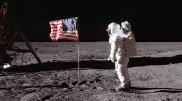

- Armele nucleare moderne – După 1945, SUA și URSS au dezvoltat bombe cu hidrogen, mult mai puternice decât cele atomice. Au apărut rachetele balistice intercontinentale (ICBM) și submarinele cu rachete nucleare, capabile să lovească oricare punct de pe glob.
- Sputnik 1 (1957) – URSS a lansat primul satelit artificial al Pământului. Evenimentul a șocat SUA și a declanșat „cursa spațială". A fost și începutul tehnologiei satelitare folosite astăzi pentru telecomunicații, meteorologie și navigație.
- Iuri Gagarin (1961) – Primul om în spațiu, la bordul navetei Vostok 1. A demonstrat că zborul cosmic uman este posibil și a împins SUA să accelereze programul Apollo.
- Apollo 11 (1969) – Neil Armstrong și Buzz Aldrin au devenit primii oameni care au pășit pe Lună. Programul Apollo a generat numeroase tehnologii civile: materiale rezistente, sisteme de comunicare, miniaturizarea componentelor electronice.
- Tranzistorul și circuitul integrat – Inventate în 1947 (Bell Labs) și, respectiv, 1958 (Jack Kilby), au înlocuit tuburile cu vid. Au permis miniaturizarea electronicii și au pus baza tuturor calculatoarelor moderne.
- ARPANET (1969) – Rețeaua militară americană care a stat la baza internetului. A fost creată pentru a permite comunicarea între calculatoare în caz de atac nuclear. În anii '80 a evoluat treptat spre internetul civil.
- Calculatoarele personale – În anii '70–'80 au apărut Apple II (1977), IBM PC (1981) și Macintosh (1984). Calculatorul a ieșit din laboratoare și a intrat în casele oamenilor obișnuiți.
- GPS – Sistemul Global de Poziționare a fost dezvoltat de armata SUA începând cu anii '70 și a devenit complet operațional în 1995. Astăzi este folosit zilnic de miliarde de oameni pentru navigație.
